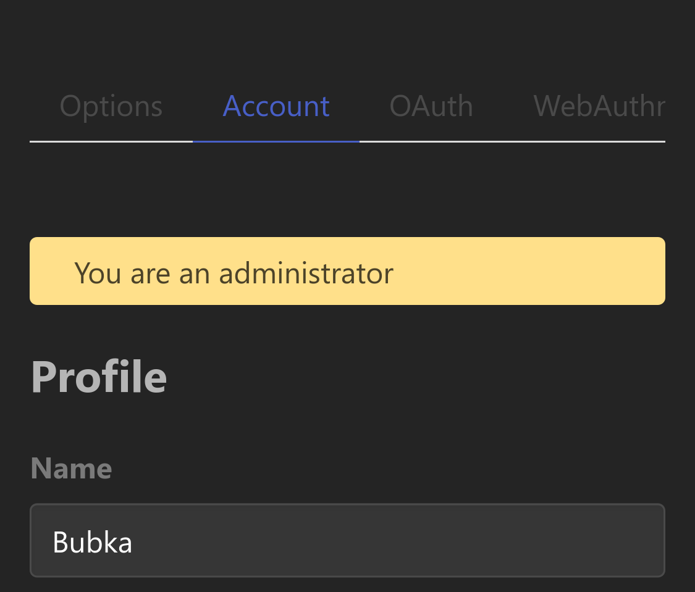
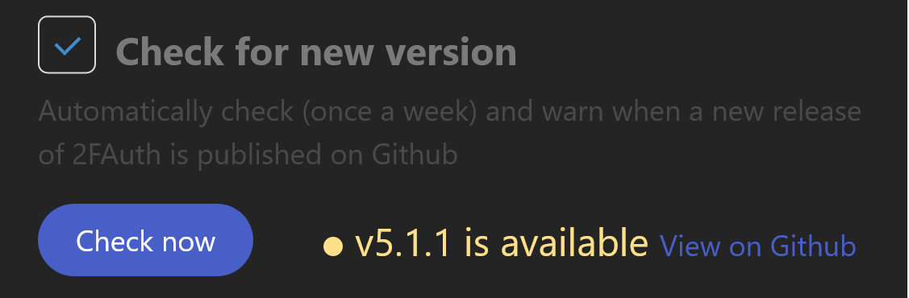
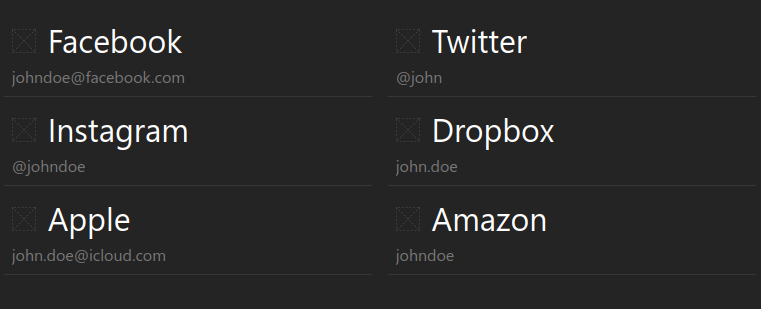

Administration
Admin role
The very first account created is automatically set up as an administrator account. Administrators have access to a dedicated area where they can manage global application settings as well as the user base. Click on the Admin link in the 2FAuth footer to access it.
Granted permissions
Administrators can consult, create, promote, manage or delete any user account.
The account details visible to an administrator include:
- The username
- The email address
- The user ID
- The number of Personal Access Tokens
- The number of WebAuthn security devices
- The user preferences
- The time the user registered and last visited
When the user registered using SSO:
- The SSO provider
- The user's ID on the provider side
Although administrators can view information on users, they cannot generate OTPs or even view users's 2FA.
Promote to administrator
Any user may be promoted to administrator by another administrator. Edit the user account at Admin > Users > [User] > and check the Is administrator flag. The change is effective immediately, without notification to the promoted user. Demoting is done the same way.
There must always be at least one administrator. The last administrator account cannot demoted.
An administrator account is identified as such by a banner in the Settings > Account section.

Application setup
In addition to environment information, the Admin > App Setup page provides administrators with a number of features for managing the instance.
Version checking
2FAuth can automatically check if a new version has been released. When enabled, a request will be made to GitHub every week to retrieve the latest version number. You can also run the check manually by clicking the button.
A new available version is reported to the administrators in the 2FAuth footer and the App Setup page.

This feature makes outgoing requests that you may want to pass through a proxy.
If so, set the PROXY_FOR_OUTGOING_REQUESTS environment variable.
Email testing
2FAuth requires a valid email configuration to send emails to users. Features like password reset will not work otherwise.
Click the button to send a test email. The email will be sent to the email address registered with the MAIL_FROM_ADDRESS environment variable.
2FAuth cannot guarantee whether or not the email was successfully sent because it does not control the entire distribution process. It will display any potential errors that it can handle.
Check your logs in case the email was never delivered. They might provide more information about the issue.
2FA Sharing
The 2FA Account Sharing feature enables users to securely grant access to their 2FA accounts without exposing the underlying 2FA secrets. Authorized users can then generate valid authentication codes.
When the sharing feature is disabled:
- Existing share configurations are preserved.
- Shared access becomes temporarily inactive.
No sharing data is deleted during this process. If the feature is later re-enabled, all previously configured shares automatically become effective again under their original conditions and permissions.
ALL_USERS scope activation
Because of its broad impact, the ALL_USERS sharing scope may be considered dangerous or inappropriate.
Disabling the option prevents any new sharing using the ALL USERS scope and inactivates existing ones. If the option is later re-enabled, all previously inactivated shares automatically become effective again, unless sharings with specific users have been set up in the meantime.
Icon storage
File system storage
By default, 2FAuth stores icons in the server filesystem (or the bind-mounted volume of the Docker container) at [2FAuth_install_dir]/storage/app/public/icons/. This directory is exposed by the web server via the [2FAuth_install_dir]/public/storage symlink so icons can be accessed by browsers using URLs like https://2fauth.myserver.com/storage/icons/L0Oz2D63gG74LYcZMILN60aHBBPeoydXbja0sVQm.png.
As the example URL above suggests, each icon file is stored under a unique name consisting of a 40-character random string. This prevents name collisions and makes the file names almost impossible to guess. Icons must exist in [2FAuth_install_dir]/storage/app/public/icons/; otherwise 2FAuth gracefully replaces them with a visual placeholder until you set up new ones.

Database storage
When you enable the
Store icons to database
option, all registered icons are immediately serialized and stored in the icons table of the database. By "registered" we mean icons that are linked to a 2FA account record; any orphan icon files found during this operation are deleted. Storing icons in the database simplifies backups, since all 2FA data are kept in one place.
Although icons are stored in the database, the storage/app/public/icons/ directory is still required. It acts as a cache to speed up file serving. If an icon file is deleted from that location, 2FAuth recreates it on the fly using the database record.
It is possible to switch back to filesystem storage at any time. 2FAuth will verify that all icons have a corresponding file in the dedicated directory and will then clear the icons table.
Security
See Data protection.
Authentication
Single Sign-On
See SSO.
Registration control
It is possible to restrict user registration to a limited range of email addresses or to completly disable registrations.
Restriction
This is an authorization pattern, only email addresses that meet a condition are allowed to register.
Once the Restrict registration setting is enabled in Admin > App Setup, there are 2 ways to define the registration policy:
- The filtering list
-
Email addresses from this list are allowed to register on 2FAuth.
Separate the addresses with a
|. All must be valid email addresses. Ex:john@example.org|jane@example.netLeave the field blank to disable the filter.
- The filtering rule
-
Email addresses that match a regular expression are allowed to register on 2FAuth.
For example, here is the regex to allow registering using any
@example.orgemail address :^[A-Za-z0-9._%+-]+@example\.orgLeave the field blank to disable the filter.
Both filtering options can be used simultaneously. The OR operator is applied, this means that the address only has to match one of the conditions to be allowed.
The registration policy does not affect SSO.
No registration
Check the Disable registration setting to fully disable registration. This affects SSO, so new users won't be able to sign in via SSO.
Check the Keep SSO registration enabled setting to override this behavior. New users will be able to sign in for the first time using SSO whereas registration is disabled.
Users management
User creation
Administrators can create new user account. Go to Admin > Users and click the Create a user button.
The form provides the exact same fields that a visitor would see in the registration form, with the same validation rules. An additional checkbox is available to directly grant administrator rights to the newly created user: Is administrator
When an administrator creates a new user, the password is known.
It could be considered a bad practice, but this gives some flexibility to the administrator to manage its user base the way he wants.
The administrator can always reset the password of the newly created user. See
Access reset
While users have the ability to manage their access themselves, administrators can also take action to reset user access at Admin > Users > [User] > .
Possible actions:
-
Force resets the current user password with a randomly generated new password then sends a password reset email to the user so they can set their own password.
Using this, you are guaranteed that the user password has been changed. However, the user is free to set a custom password or not. The token bound to the password reset email received by the user has an expiry time of 60 minutes.
Any previous request for a password reset, from the user or an administrator, will be revoked.
-
Sends a new password reset email to the user without modifying their current password.
This generates a new reset token with an expiry time of 60 minutes, any previous request will be revoked.
- (PAT)
-
Revokes all of the user's Personal Access Tokens.
Once their PATs have been revoked, the user will no longer be able to authenticate to the 2FAuth API.
This action is irreversible. Revoked tokens are not searchable, cannot be recovered, and cannot be deleted from the 2FAuth pages.
If for some reason you need to purge revoked (or expired) tokens, run the following Artisan commands:
php artisan passport:purge --revoked php artisan passport:purge --expired - (WebAuthn security devices)
-
Revokes all of the user's WebAuthn security devices.
Once their security devices have been revoked, the user will no longer be able to authenticate using WebAuthn.
If the user has checked the Use WebAuthn only option at Settings > WebAuthn, revoking their security devices will reset the option so they can log in with their username and password.
This action is irreversible. Revoked devices are not searchable and cannot be recovered from the 2FAuth pages.
User deletion
A user account can be deleted by an administrator, even an account with the Admin role. All data associated with the deleted account will also be deleted, including 2FA records, preferences, access tokens and logs.
Click the button at Admin > Users > [User] > to perform the delete.
This is not a soft delete. Deleted account cannot be recovered.
There must always be at least one administrator. The last administrator account cannot be deleted.
Health check
2FAuth provides a special URL to check its health: /up
This is a very lightweight resource that responds with a 200 HTTP status code when the application is up and running. It can be used to set up a Docker HEALTHCHECK or a Kubernetes HTTPS liveness probe.